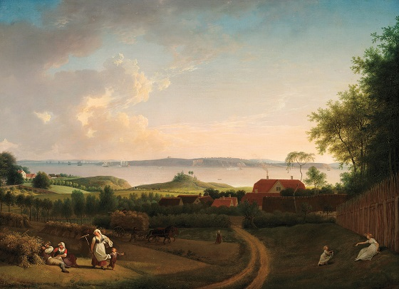

I. Gurab é saoghal 'ach subhailce aghaibh é!
Abairt ócáide í seo. Nuair a chastar lánamhain óg indiaidh a bpósta ar na seandaoine i dTeilionn seo thuas an dóigh a maireann siad an saoghal úr daobhtha.
Nóta: - Tá dóigh eile a mairtear an saoghal úr do lánamhain fosta -
Go mairidh sibh an saoghal úr!
Freagar:- Go mairidh tú do shláinte!
2. Cuireadh fáilte an t-saighdiúra roimhis. .i. Duine a gcuirfidhe fáilte roimhis nach dtiocfadh ó'n chroidhe. Is minic a tharluigheas seo.
Béidh duine astoigh i dteach agus tchídhfear duine a teacht a mbfeárr le bunadh an toighe gan a'n amharc a fheiceáil air-
Cuirfidh siad a seacht mallacht air, bfhéidir, ach annsin nuair a thiocfas an duine sin 'un toighe béidh siad uilig 'na rith a breith greim láimhe air - sin í an fháilte a dtugtar fáilte an t-saighdiúra uirthe i dTeilionn.
3. Dia cadarainn agus an boc dubh!
.i. Dia eadar sinn fhéin agus an diabhal.
Go sábhailidh Dia sinn ar an diabhal.
Baintear féidhim as an abairt seo nuair a bíthear a trácht ar an diabhal.